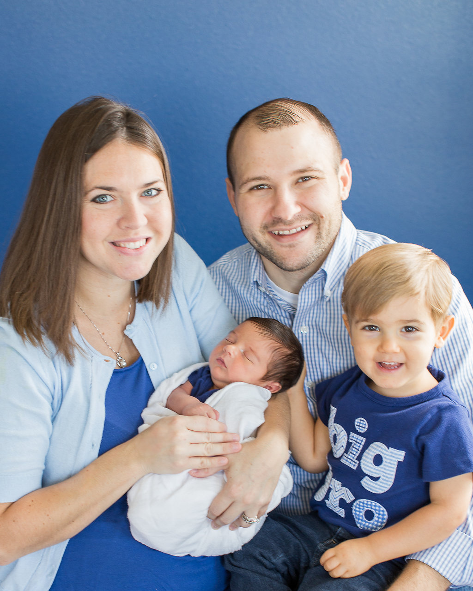

About Me
Hi. I'm Brian Sedely. I live in Winter Garden, Florida with my wife Lydia, my two sons Christian and Caleb, Manny the dog and Ellie the cat.
I've worked in Banking and Financial Services for nearly 13 years. I spent most of my time in various divisions of SunTrust, but as of 2014, I work for Seaside National Bank & Trust, a community bank headquartered in Orlando. The University of Central Florida is my alma mater (class of '07), as well as where I completed B-school (MBA class of '13).
I enjoy any kind of sport you can do behind a boat, especially wakeboarding. (I don't get to go frequent enough). I like music, both listening and playing music on guitar, bass, or drums.
Connect with Me